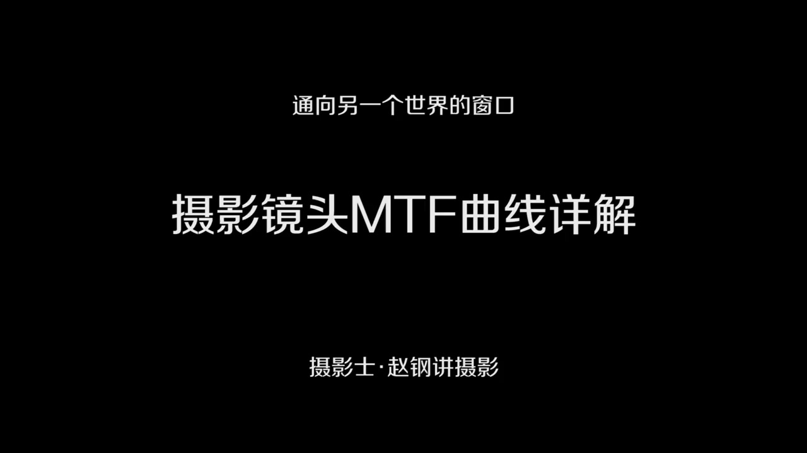
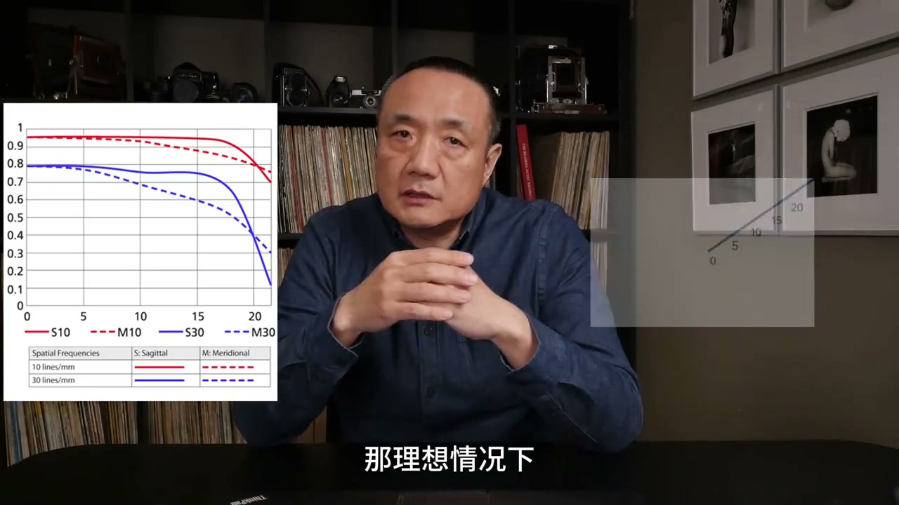
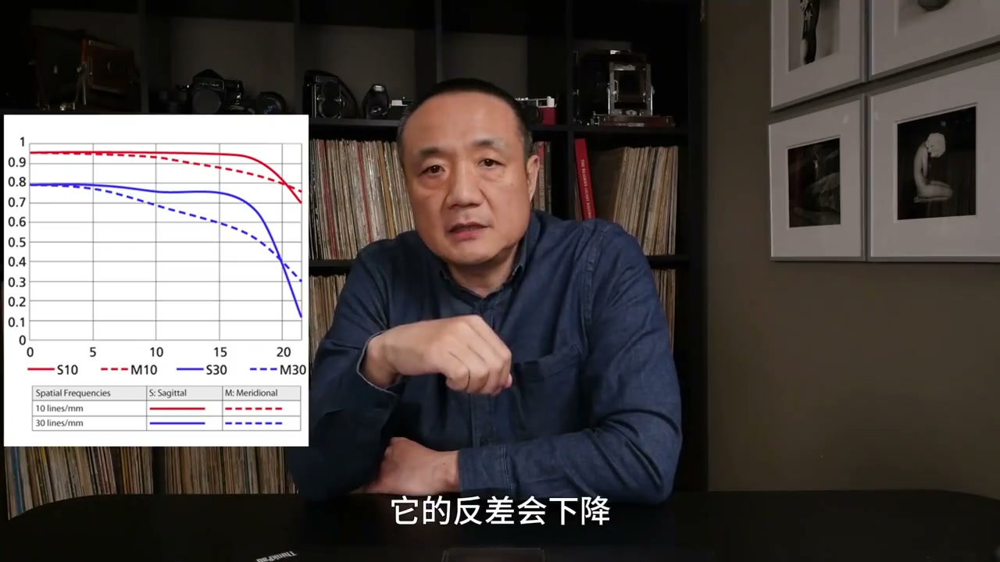
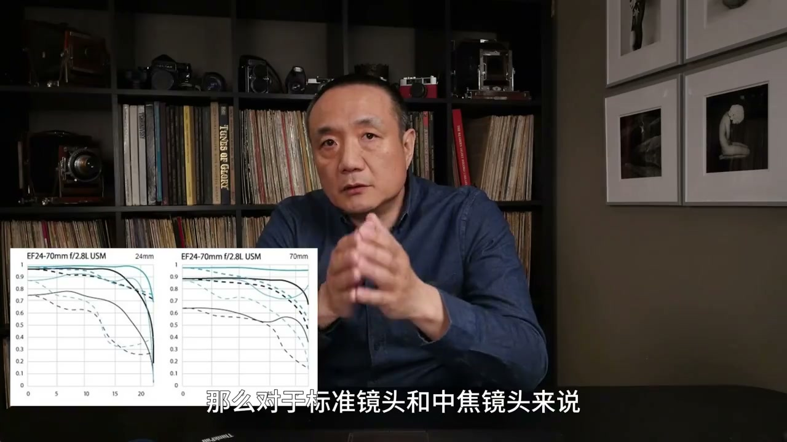

内容要点
[00:00] 大家好
[00:03] 今天继续给大家讲关于镜头的知识
[00:06] 有一点摄影基础的人都知道MTF曲线这个东西
[00:11] 他描述了镜头的光学特性
[00:14] 摄影的技术性在摄影爱好者圈子里呈现一种两级分化的状态
[00:20] 有人鼓吹摄影的技术性
[00:23] 拿着各种指标参数来评价摄影器材
[00:27] 也有人完全抗拒摄影的技术性
[00:30] 完全不去理会它
[00:32] 随便拿相机去拍照
[00:34] 其实摄影的技术性它不是枯燥的
[00:38] 更不是神秘的
[00:39] 摄影的技术原理都会在你拍摄的结果上产生影响
[00:45] 摄影者要从这种影响上去认识技术
[00:48] 反过来去运用技术去控制你的照片
[00:51] 我对技术的讲解目的是让大家了解摄影的技术原理
[00:56] 消除对技术的神秘感
[00:58] 打破技术的限制
[01:00] 我给大家用容易理解的方式来讲一下
[01:03] 这个MTF曲线是怎么回事
[01:06] 有什么实用的意义
[01:08] MTF是调制传递函数的英文缩写
[01:13] 大家不要从理科的角度去理解这个概念
[01:16] 可以把它理解为光线经过镜头的透射以后所产生的影响
[01:23] 这个影响可以从能量变化的角度去理解
[01:26] 比如说一份光的能量
[01:28] 经过镜头以后因为镜片表面的反射
[01:31] 光学玻璃的吸收
[01:33] 会让能量下降
[01:35] 那么一份光的能量经过镜头以后就小于一了
[01:39] 越是好的镜头应该损失的越小
[01:42] 那么MTF的数值就应该越接近于一
[01:46] MTF的采样测量方法是用相机去拍摄
[01:51] 黑白相间的条文
[01:53] 这个条文在光学上叫光山
[01:55] 它的密度是以通过镜头后的光山影像来计算
[02:01] 单位是线对美毫米
[02:04] 一般摄影镜头采用的光山密度是10线对和30线对
[02:09] 分别代表了低分辨率和高分辨率两种情况
[02:13] 光山的每对条文
[02:15] 白和黑分别代表了能量1和0
[02:19] 那么能量1经过镜头以后会衰减
[02:22] 能量0的位置本来不应该有影像
[02:25] 但是由于镜头的相差
[02:27] 光线在镜头内的反射
[02:29] 镜头表面的反射等因素
[02:32] 会让干扰的光线照射到光山的黑色的部分
[02:37] 那么就会让纯黑的地方
[02:39] 也不是那么黑了
[02:40] 也就是0的地方会增加一些信息
[02:44] 那么体现在光学影像上来说就是反差下降了
[02:48] 光山的影像它的反差要小于光山本身
[02:52] 好的镜头影像应该是让它尽量的接近光山本身的反差
[02:59] 光线经过镜头除了能量的衰减与干扰之外
[03:04] 这种衰减与干扰还会随着空间频率
[03:09] 以某种规律增加
[03:11] 反应在可见的这种现象就是光山的密度越大
[03:16] 那么这种衰减的干扰它也越大
[03:19] 到了一定密度就无法分辨光山的影像的反差了
[03:24] 这个时候就到了镜头的分辨率的极限
[03:28] 所谓光学的调制函数曲线
[03:32] 就是反映了上述规律的数学模型曲线
[03:36] 通过它我们可以直接看到
[03:38] 一直镜头的影像反差与分辨率的关系
[03:43] 对于好的镜头来说
[03:45] 应该尽量保持远景物的反差
[03:47] 同时尽量让这个反差在高分辨率的时候
[03:52] 不要下降得太快
[03:53] 所以我们看aptf曲线一般有两种颜色
[03:56] 一个是每毫米10线对的光山曲线
[03:59] 代表了低分辨率
[04:01] 另一个是每毫米30线对的代表了高分辨率
[04:05] 这两条曲线之间的落差越小
[04:08] 说明这个镜头的光学特性越好
[04:11] 同时我们也会看到
[04:12] 每种颜色的曲线都分成10线和虚线两部分
[04:16] 它分别代表了光山的水平和垂直状态
[04:20] 这是因为镜头对光线的传播
[04:23] 在不同的方向上
[04:25] 它的影响是不一样的
[04:27] 在了解了以上知识之后
[04:29] 我们就可以通过aptf曲线
[04:31] 去看一只镜头的光学素质了
[04:34] 那接下来我给大家讲解
[04:36] 几条曲线怎么去看
[04:38] 我们先看一下点型的aptf曲线
[04:41] 看看能从上面解读些什么
[04:43] 这个曲线是画在一个坐标系里面的
[04:46] 这个坐标系的横肘
[04:48] 表明了镜头的向场
[04:50] 从中心到边缘的一个距离
[04:52] 那么纵坐标
[04:54] 表明了影像的反差
[04:57] 理想情况下
[04:58] 镜头前面进来的光线
[05:00] 如果没有任何损失
[05:02] 那么投射到影像上
[05:04] 它的能量应该没有变化
[05:06] 那么它的比值应该是1
[05:09] 但实际情况
[05:10] 光线的能量总是有损失的
[05:12] 也就是影像的光的能量
[05:16] 会有衰减
[05:17] 所以对于aptf曲线来说
[05:19] 它的纵坐标反差最大值就是1
[05:23] 我们先看红色的曲线
[05:25] 它代表了低分辨率的反差
[05:27] 变化的情况
[05:29] 而且红色曲线有两条
[05:31] 一条实线一条虚线
[05:33] 分别代表了光线在水平
[05:35] 和垂直方向
[05:37] 它的反差的变化
[05:39] 蓝色的曲线
[05:40] 就代表了高分辨率的光线
[05:42] 它的反差变化的情况
[05:44] 也是有实线和虚线
[05:46] 也就是分别代表了
[05:48] 水平和垂直状态下的影像的变化
[05:51] 我们会发现
[05:52] 对于一个镜头来说
[05:54] 它在低分辨率的情况下
[05:56] 它的反差保持得很好
[05:58] 接近于1
[05:59] 但是到了高分辨率的时候
[06:01] 它的反差会下降
[06:03] 而且我们会看到
[06:05] 不管是低分辨率
[06:07] 还是高分辨率
[06:08] 它的反差都会随着
[06:11] 向场从中心到边缘的
[06:14] 距离的增加而下降
[06:16] 这也是镜头的光学特性
[06:18] 对于一个镜头来说
[06:19] 它的向场的中心部分
[06:21] 成像质量是最好的
[06:23] 那么离开中心越远
[06:25] 它的成像质量就越来越差
[06:27] 那么对于一个光学特性
[06:29] 很好的镜头来说
[06:30] 它的MTF曲线
[06:32] 应该是尽量的接近于1
[06:35] 而且比较平直
[06:37] 这说明它保持反差的能力很好
[06:40] 而且影像从中心到边缘
[06:43] 都能够保持得相对一致
[06:45] 另外在不同的分辨率下
[06:48] 也就是在实现队
[06:49] 或30线队这两个曲线之间
[06:51] 它们之间的落差越小
[06:53] 说明镜头的光学特性越好
[06:56] 我们再看另外一个MTF曲线图
[06:59] 那么这个图
[07:00] 表明了同一只镜头
[07:02] 在最大光圈和光圈F8
[07:05] 两种情况下
[07:06] 它的MTF曲线的特性
[07:09] 我们能从这个图上看到
[07:11] 在最大光圈的时候
[07:13] 是那两条黑色的曲线
[07:15] 它的反差要相对的低一些
[07:18] 那么在F8的时候
[07:20] 它的反差
[07:21] 也就是蓝色的这两条曲线
[07:23] 它的反差就比较高
[07:24] 这也说明一只镜头
[07:26] 如果适当的收小光圈
[07:28] 它的光学的特性会变得好一些
[07:31] 接下来我们看一下
[07:32] 一只变焦镜头的MTF曲线
[07:34] 这是加能24-70毫米的变焦镜头
[07:38] 那这个曲线图
[07:39] 有两个图表来组成的
[07:41] 一个反映了
[07:42] 它在24毫米焦距上的曲线特性
[07:46] 而另一张图
[07:47] 是它在70毫米的一个表现
[07:49] 我们从这个图表的对比中发现
[07:51] 在广角端
[07:53] 它的影像的中心和边缘的
[07:56] 尺量的落差会比较大一些
[07:59] 那么这个图
[08:00] 其实反映了
[08:01] 镜头的一个光学特性的普遍现象
[08:04] 你会发现
[08:05] 广角镜头
[08:06] 它的中间成像和边缘成像
[08:09] 它的下降速度会比较快
[08:11] 那么对于标准镜头
[08:12] 或中角镜头来说
[08:13] 它保持的就比较好
[08:15] 一只镜头的光学特性
[08:17] 是由它的各种技术特性
[08:19] 综合影响的结果
[08:21] 镜头的光学设计
[08:23] 到工艺
[08:24] 玻璃的材料
[08:26] 杜摩的工艺
[08:27] 镜头内部的消光处理
[08:29] 都会影响到它的光学性能
[08:31] 那么对于同一只镜头来说
[08:33] 它在不同的光圈下
[08:35] 它表现的光学性能也是不一样的
[08:38] 那么MTF曲线
[08:39] 对于摄影者的实际意义
[08:41] 是怎么样的呢
[08:42] 我觉得没有必要
[08:44] 通过MTF曲线
[08:45] 去品头论足
[08:47] 各种镜头
[08:48] 来去炫耀自己的摄影知识有多好
[08:51] 因为镜头好
[08:52] 是工程师和厂家的功劳
[08:54] 没有什么可炫耀的
[08:56] 现在的摄影镜头
[08:57] 它的光学质量都不错
[08:59] 基本都能满足摄影的需求
[09:01] 那么你在买镜头的时候
[09:03] 基本上是一分钱一分货
[09:05] 光学质量好的镜头
[09:07] 也更昂贵
[09:09] 如果你在两只
[09:10] 价钱接近的镜头之间
[09:12] 拿不定主意的话
[09:14] 你可以去参考一下
[09:15] 他们两个的MTF曲线
[09:18] 你可以去选择
[09:19] 更平坦
[09:21] 曲线更高的那一只镜头
[09:23] 其实MTF曲线
[09:24] 不那么漂亮的镜头
[09:25] 不见得
[09:26] 它拍出的照片就不好
[09:28] 因为一张照片
[09:29] 毕竟还是要用
[09:30] 我们的眼睛去感受的
[09:32] 所以我们在拍照片的时候
[09:34] 使用的镜头
[09:35] 和在工业上 科学上
[09:38] 用的那种纯技术性的镜头
[09:40] 是不一样的
[09:41] 你了解MTF曲线
[09:43] 是从技术原理上
[09:44] 去认识镜头
[09:45] 消除对技术的神秘感
[09:48] 有人就受困于MTF曲线
[09:51] 迷信这个东西
[09:52] 非得选择曲线高的镜头去用
[09:55] 这样做其实只会一笑大方
[09:59] 今天我们就先聊到这
[10:00] 我们下次见吧



